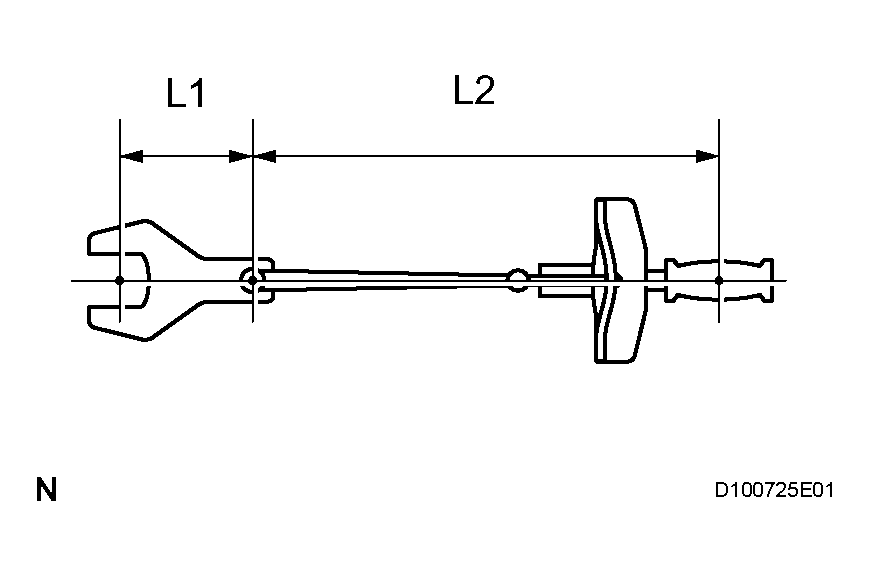
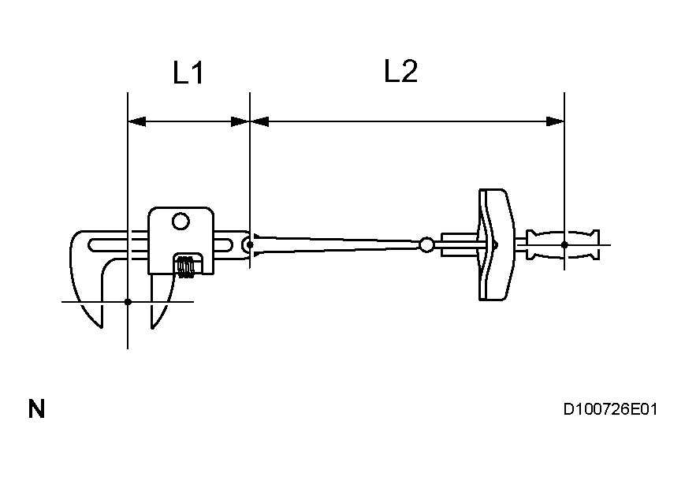
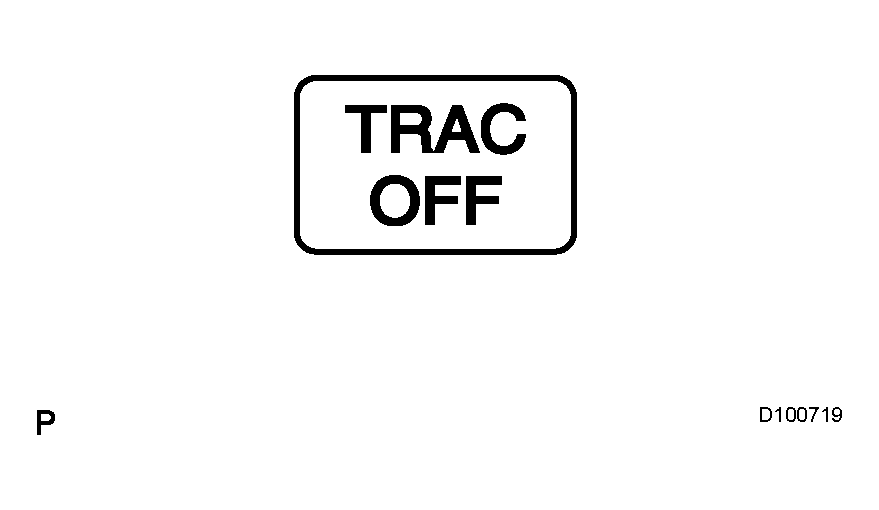

Repair Instruction: Precaution
- BASIC REPAIR HINT
- HINTS ON OPERATIONSBASIC REPAIR HINT
1 Attire - Always wear a clean uniform.
- Hat and safety shoes must be worn.
2 Vehicle protection Prepare a grille cover, fender cover, seat cover and floor mat before starting the operation. 3 Safe operation - When working with 2 or more persons, be sure to check safety for one another.
- When working with the engine running, make sure to provide ventilation for exhaust fumes in the workshop.
- If working on high temperature, high pressure, rotating, moving, or vibrating parts, wear appropriate safety equipment and take extra care not to injure yourself or others.
- When jacking up the vehicle, be sure to support the specified location with a safety stand.
- When lifting up the vehicle, use appropriate safety equipment.
4 Preparation of tools and measuring gauge Before starting operation, prepare a tool stand, SST, gauge, oil and parts for replacement. 5 Removal and installation, disassembly and assembly operations - Diagnose with a thorough understanding of proper procedures and of the reported problem.
- Before removing the parts, check the general condition of the assembly and for deformation and damage.
- When the assembly is complicated, take notes. For example, note the total number of electrical connections, bolts, or hoses removed. Add matchmarks to ensure reassembly of components in the original positions. Temporarily mark hoses and their fittings if needed.
- Clean and wash the removed parts if necessary and assemble them after a thorough check.
6 Removed parts - Place the removed parts in a separate box to avoid mixing them up with the new parts or contaminating the new parts.
- For non-reusable parts such as gaskets, O-rings, and self-locking nuts, replace them with new ones as instructed in this manual.
- Retain the removed parts for customer inspection, if requested.
- JACKING UP AND SUPPORTING VEHICLE
- Care must be taken when jacking up and supporting the vehicle. Be sure to lift and support the vehicle at the proper locations.
- PRECOATED PARTS
- Precoated parts are bolts and nuts that are coated with a seal lock adhesive at the factory.
- If a precoated part is retightened, loosened or moved in any way, it must be recoated with the specified adhesive.
- When reusing a precoated part, clean off the old adhesive and dry the part with compressed air. Then apply new seal lock adhesive appropriate to that part.
- Some seal lock agents harden slowly. You may have to wait for the seal lock adhesive to harden.
- GASKETS
- When necessary, use a sealer on gaskets to prevent leaks.
- BOLTS, NUTS AND SCREWS
- Carefully follow all the specifications for tightening torques. Always use a torque wrench.
- FUSES
- When inspecting a fuse, check that the wire of the fuse is not broken.
- When replacing fuses, be sure that the new fuse has the correct amperage rating. Do not exceed the rating or use one with a lower rating.FUSES DESCRIPTION CHART
Illustration Symbol Part Name Abbreviation FUSE FUSE MEDIUM CURRENT FUSE M-FUSE HIGH CURRENT FUSE H-FUSE FUSIBLE LINK FL CIRCUIT BREAKER CB
- CLIPS
- The removal and installation methods of typical clips used for vehicle body parts are shown in the table below.
HINT:
If clips are damaged during a procedure, always replace the clips with new clips.
CLIPS DESCRIPTION CHARTShape (Example) Illustration Procedures - Remove clip with clip remover or pliers.
- Remove fastener with clip remover or screwdriver.
- Remove clip with wide scraper to prevent panel damage.
- Remove clip by pushing center pin through and prying out shell.
- Remove clip by unscrewing center pin and prying out shell.
- Remove clip by prying out pin and then prying out shell.
- The removal and installation methods of typical clips used for vehicle body parts are shown in the table below.
- CLAWS
- The removal and installation methods of typical claws used for vehicle body parts are shown in the table below.
HINT:
If claws of caps or covers are damaged during a procedure, always replace the caps or covers with new ones.
CLAWS DESCRIPTION CHARTShape (Example) Illustration Procedures - Using a screwdriver, detach the claw and remove the cap or cover.
- Using a screwdriver, detach the claw and remove the cap or cover.
- Using a screwdriver, detach the claw and remove the cap or cover.
- The removal and installation methods of typical claws used for vehicle body parts are shown in the table below.
- REMOVAL AND INSTALLATION OF VACUUM HOSES
- To disconnect a vacuum hose, pull and twist from the end of the hose. Do not pull from the middle of the hose as this may cause damage.
- When disconnecting vacuum hoses, use tags to identify where they should be reconnected.
- After completing any hose related repairs, double-check that the vacuum hoses are properly connected. The label under the hood shows the proper layout.
- When using a vacuum gauge, never force the hose onto a connector that is too large. If a hose has been stretched, it may leak air. Use a step down adapter if necessary.
- TORQUE WHEN USING TORQUE WRENCH WITH EXTENSION TOOL

Courtesy of © TOYOTA, LICENSE AGREEMENT TMS1002- Use the formula below to calculate special torque values for situations where SST or an extension tool is combined with the torque wrench.
Formula:
T' = L2/(L1 + L2) * T

Courtesy of © TOYOTA, LICENSE AGREEMENT TMS1002FORMULA DESCRIPTION CHARTT' Reading of torque wrench {N*m (kgf*cm, ft.*lbf)} T Torque {N*m (kgf*cm, ft.*lbf)} L1 Length of SST or extension tool {cm (in.)} L2 Length of torque wrench {cm (in.)} NOTE: If an extension tool or SST is combined with a torque wrench and the wrench is used to tighten to a torque specification in this information, the actual torque will be excessive and parts will be damaged.
- Use the formula below to calculate special torque values for situations where SST or an extension tool is combined with the torque wrench.
- HINTS ON OPERATIONS
- FOR VEHICLES WITH SUPPLEMENTAL RESTRAINT SYSTEM
The SCION xB is equipped with a Supplemental Restraint System (SRS). The SRS of this vehicle consists of the following:
- Steering pad
- Front passenger airbag assembly
- Front seat inner belt assembly
- Front seat outer belt assembly with pretensioner
- Center airbag sensor
- Front airbag sensor
CAUTION:- Failure to carry out service procedures in the correct sequence could cause SRS parts to unexpectedly deploy and possibly lead to serious injuries. Furthermore, if a mistake is made when servicing SRS parts, they may fail to operate when required. Before performing servicing (including installation/removal, inspection and replacement of parts), be sure to read the following precautions.
- Before starting work, wait at least 90 seconds after the ignition switch is turned OFF and after the cable of the negative (-) battery terminal is disconnected. (SRS parts are equipped with a backup power source. If work is started within 90 seconds of turning the ignition switch OFF and disconnecting the cable from the negative (-) battery terminal, SRS parts may deploy.)
- Do not expose SRS parts directly to hot air or flames.
NOTE:- Malfunction symptoms of SRS parts are difficult to confirm. DTCs are the most important source of information when troubleshooting. During troubleshooting, always confirm DTCs before disconnecting the cable from the negative (-) battery terminal.
- For minor collisions where SRS parts do not deploy, always inspect the SRS parts.
- Before performing repairs, remove airbag sensors as necessary if any kind of impact is likely to occur to an airbag sensor during repairs.
- Never use SRS parts from another vehicle. When replacing SRS parts, replace them with new ones.
- Never disassemble or attempt to repair SRS parts.
- If an SRS part has been dropped, or if there are any cracks, dents or other defects in the case, bracket or connector, replace the SRS part with a new one.
- Use an ohmmeter/voltmeter with high impedance (10 kΩ/V minimum) for troubleshooting the electrical circuits.
- Information labels are attached to the periphery of SRS parts. Follow the cautions and instructions on the labels.
- After work on SRS parts is completed, perform the SRS warning light check.
- When the cable is disconnected from the negative (-) battery terminal, the memory settings of each system will be cleared. Because of this, be sure to write down the settings of each system before starting work. When work is finished, reset the settings of each system as before. Never use a backup power supply from outside the vehicle to avoid erasing the memory in a system.
- SPIRAL CABLE
- The steering wheel must be fitted correctly to the steering column with the spiral cable at the neutral position, as cable disconnection and other problems may occur. Refer to the information about correct installation of the steering wheel.
- AIRBAG ASSEMBLY
- Airbag assembly with pad: Always place a removed or new airbag assembly with the pad surface facing upward. Placing the airbag assembly with the airbag inflation direction facing downward could cause a serious accident if the airbag inflates. Also, do not place anything on top of the airbag assembly.
- Never measure the resistance of the airbag squib. This may cause the airbag to inflate, which could cause a serious injury.
- Grease or detergents of any kind should not be applied to the airbag assembly.
- Store the airbag assembly in an area where the ambient temperature is below 93°C (200°F), the humidity is not high and there is no electrical noise.
- When using electric welding anywhere on the vehicle, disconnect the airbag ECU connectors. These connectors contain shorting springs. This feature reduces the possibility of the airbag deploying due to currents entering the squib wiring.
- When disposing of the vehicle or the airbag assembly by itself, the airbag should be deployed using SST before disposal. Activate the airbag in a safe place away from electrical noise.
- SEAT OUTER BELT ASSEMBLY WITH PRETENSIONER
- Never measure the resistance of the seat outer belt. This may cause the pretensioner of the seat outer belt to activate, which could cause a serious injury.
- Never install the seat outer belt on another vehicle.
- Store the seat outer belt in an area where the ambient temperature is below 80°C (176°F), the humidity is not high and there is no electrical noise.
- When using electric welding anywhere on the vehicle, disconnect the airbag ECU connectors (2 pins). These connectors contain shorting springs. This feature reduces the possibility of the pretensioner deploying due to currents entering the squib wiring.
- When disposing of a vehicle or the seat outer belt by itself, the pretensioner should be activated before disposal. Activate the pretensioner in a safe place away from electrical noise.
- As the seat outer belt is hot after the pretensioner is activated, allow some time for it to cool down sufficiently before disposal. Never apply water to try to cool down the seat outer belt.
- Grease, detergents, oil or water should not be applied to the seat outer belt.
- AIRBAG SENSOR ASSEMBLY
- Never reuse an airbag sensor assembly that has been involved in a collision where the SRS has deployed.
- The connectors to the airbag sensor assembly should be connected or disconnected with the sensor placed on the floor. If the connectors are connected or disconnected while the airbag sensor assembly is not placed on the floor, the SRS may activate.
- Work must be started at least 90 seconds after the ignition switch is turned OFF and the cable is disconnected from the negative (-) battery terminal, even if only loosening the set bolts of the airbag sensor assembly.
- WIRE HARNESS AND CONNECTOR
- The SRS wire harness is integrated with the instrument panel wire harness assembly. All the connectors in the system are yellow. If the SRS wire harness becomes disconnected or the connector becomes broken, repair or replace it.
- ELECTRONIC CONTROL
- REMOVAL AND INSTALLATION OF BATTERY TERMINALNOTE: Certain systems need to be initialized after disconnecting and reconnecting the cable from the negative (-) battery terminal.
- Before performing electronic work, disconnect the cable from the negative (-) battery terminal to prevent component and wire damage caused by accidental short circuits.
- When disconnecting the cable, turn the ignition switch OFF and headlight dimmer switch OFF, and loosen the cable nut completely. Perform these operations without twisting or prying the cable. Then disconnect the cable.
- Clock settings, radio settings, audio system memory, DTCs and other data are erased when the cable is disconnected from the negative (-) battery terminal. Write down any necessary data before disconnecting the cable.
- HANDLING OF ELECTRONIC PARTS
- Do not open the cover or case of the ECU unless absolutely necessary. If the IC terminals are touched, the IC may be rendered inoperative by static electricity.
- Do not pull the wires when disconnecting electronic connectors. Pull the connector itself.
- Be careful not to drop electronic components, such as sensors or relays. If they are dropped on a hard surface, they should be replaced.
- When cleaning the engine with steam, protect the electronic components, air filter and emission-related components from water.
- Never use an impact wrench to remove or install temperature switches or temperature sensors.
- When measuring the resistance of a wire connector, insert the tester probe carefully to prevent terminals from bending.
- REMOVAL AND INSTALLATION OF BATTERY TERMINAL
- REMOVAL AND INSTALLATION OF FUEL CONTROL PARTS
- PLACE FOR REMOVING AND INSTALLING FUEL SYSTEM PARTS
- Work in a location with good air ventilation that does not have welders, grinders, drills, electric motors, stoves, or any other ignition sources.
- Never work in a pit or near a pit as vaporized fuel will collect in those places.
- REMOVING AND INSTALLING FUEL SYSTEM PARTS
- Prepare a fire extinguisher before starting the operation.
- To prevent static electricity, install a ground wire to the fuel changer, vehicle and fuel tank, and do not spray the surrounding area with water. Be careful when performing work in this area, as the work surface will become slippery. Do not clean up gasoline spills with water, as this may cause the gasoline to spread, and possibly create a fire hazard.
- Avoid using electric motors, working lights and other electric equipment that can cause sparks or high temperatures.
- Avoid using iron hammers as they may create sparks.
- Dispose of fuel-contaminated cloth separately using a fire resistant container.
- PLACE FOR REMOVING AND INSTALLING FUEL SYSTEM PARTS
- REMOVAL AND INSTALLATION OF ENGINE INTAKE PARTS
- If any metal particles enter inlet system parts, this may damage the engine.
- When removing and installing inlet system parts, cover the openings of the removed parts and engine openings. Use gummed tape or other suitable materials.
- When installing inlet system parts, check that no metal particles have entered the engine or the installed parts.
- HANDLING OF HOSE CLAMPS
- Before removing the hose, check the clamp position so that it can be reinstalled in the same position.
- Replace any deformed or dented clamps with new ones.
- When reusing a hose, attach the clamp on the clamp track portion of the hose.
- For a spring type clamp, you may want to spread the tabs slightly after installation by pushing in the direction of the arrows as shown in the illustration.
- FOR VEHICLES EQUIPPED WITH MOBILE COMMUNICATION SYSTEMS
- Install the antenna as far away from the ECU and sensors of the vehicle electronic systems as possible.
- Install an antenna feeder at least 20 cm (7.87 in.) away from the ECU and sensors of the vehicle electronic systems. For details about ECU and sensors locations, refer to the article on the applicable components.
- Keep the antenna and feeder separate from other wirings as much as possible. This will prevent signals of the communication equipment from affecting vehicle equipment and vice versa.
- Check that the antenna and feeder are correctly adjusted.
- Do not install any high-powered mobile communication system.
- FOR VEHICLES EQUIPPED WITH TRACTION CONTROL (TRAC) SYSTEM
When testing with a 2-wheel drum tester such as a speedometer tester, a combination tester for the speedometer and brake, a chassis dynamometer, or when jacking up the front wheels and turning the wheels, turn the TRAC system OFF by pressing the TRAC OFF switch.

Courtesy of © TOYOTA, LICENSE AGREEMENT TMS1002NOTE: TRAC system OFF condition can be confirmed by the "TRAC OFF" warning indicator light in the combination meter.- Confirm that the TRAC system is OFF.
- Press the TRAC OFF switch to turn off the TRAC system.
- Check that the TRAC OFF indicator light illuminates.
HINT:
The slip indicator light should always illuminate immediately after the engine is started.
- Begin testing.
- Press the TRAC OFF switch to turn on the TRAC system and check that the TRAC OFF indicator light turns off.
HINT:
The slip indicator light blinks when the TRAC system is operating.
- Confirm that the TRAC system is OFF.
- FOR VEHICLES EQUIPPED WITH VEHICLE STABILITY (VSC) SYSTEM
- NOTICES WHEN USING DRUM TESTER
- Before beginning testing, disable the VSC. To disable the VSC, turn the ignition switch OFF and connect SST to terminals TS and CG of the DLC3.
SST 09843-18040
- Before beginning testing, disable the VSC. To disable the VSC, turn the ignition switch OFF and connect SST to terminals TS and CG of the DLC3.
- NOTICES OF RELATED OPERATIONS TO VSC
- Do not carry out unnecessary installation and removal as it might affect the adjustment of VSC related parts.
- Be sure to follow the instructions for work preparation and final confirmation of proper operation of the VSC system.
- NOTICES WHEN USING DRUM TESTER
- FOR VEHICLES EQUIPPED WITH CATALYTIC CONVERTER CAUTION: If a large amount of unburned gasoline or gasoline vapors flow into the converter, it may cause overheating and create a fire hazard. To prevent this, observe the following precautions.
- Use only unleaded gasoline.
- Avoid idling the engine for more than 20 minutes.
- Avoid performing unnecessary spark jump tests.
- Perform a spark jump test only when absolutely necessary. Perform this test as rapidly as possible.
- While testing, never race the engine.
- Avoid a prolonged engine compression measurement. Engine compression measurements must be performed as rapidly as possible.
- Do not run the engine when the fuel tank is nearly empty. This may cause the engine to misfire and create an extra load on the converter.